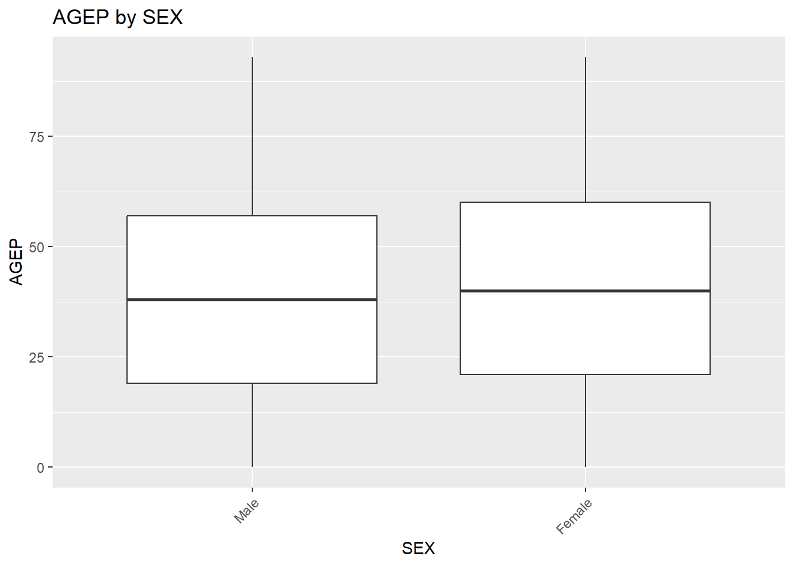

# Census variables.json nests value labels under a list named "item"
# this helper unwraps that structure into a simple code aka label list.
extractItemLabels <- function(values) {
if (is.null(values)) {
return(list())
}
if (is.list(values) && !is.null(values$item)) {
values <- values$item
}
if (is.list(values) && length(values) == 1L && is.list(values[[1]])) {
values <- values[[1]]
}
values
}Project 1
Introduction
This project focuses on building R functions which query the U.S Census Berenau’s Public Use Microdata Sample (PUMS) API directly. Our objective is to practice working with REST API content by constructing request URLs, parsing raw JSON responses, and converting the results into useful type datatype.
Part 1: Data Processing
Parsing Variable Values
getVariableValues <- function(year) {
if (!year %in% 2021:2024) {
stop("Year must be 2021, 2022, 2023, or 2024")
}
# the state geography variable is named "ST" in 2021/2022 and "STATE" in 2023/2024
geo_var <- if (year %in% c(2021, 2022)) "ST" else "STATE"
# only gets dictionary entries for variables this project actually needs
vars_needed <- c("AGEP", "GASP", "GRPIP", "JWAP", "JWDP", "JWMNP",
"PWGTP", "FER", "HHL", "SCH", "SCHL", "SEX",
geo_var, "REGION", "DIVISION")
url <- paste0("https://api.census.gov/data/", year, "/acs/acs1/pums/variables.json")
resp <- GET(url)
# simplifyVector = FALSE keeps the JSON's nested list structure intact,
# which extractItemLabels() needs to detect "item" wrappers below
parsed <- fromJSON(rawToChar(resp$content), simplifyVector = FALSE)
all_vars <- parsed$variables
# build the label mapping for each variable we need
value_list <- list()
for (v in vars_needed) {
value_list[[v]] <- extractItemLabels(all_vars[[v]]$values)
}
value_list
}# Build the variable dictionary once per year and cache it to disk, so we
# don't hit the Census API every time this document is knit
if (!file.exists("data/variable_values.rds")) {
years <- c(2021, 2022, 2023, 2024)
variable_values <- list()
for (yr in years) {
variable_values[[as.character(yr)]] <- getVariableValues(yr)
}
dir.create("data", showWarnings = FALSE) # showWarnings = FALSE: fine if "data/" already exists
saveRDS(variable_values, "data/variable_values.rds")
}# Loads the cached dictionary for one year a list of code = label
# mappings, one per variable for use by getSingleYearData()
loadVariableValues <- function(year) {
variable_values <- readRDS("data/variable_values.rds")
variable_values[[as.character(year)]]
}# quick sanity check that the dictionary loaded and looks right
loadVariableValues(2021)$SCH$`0`
[1] "N/A (less than 3 years old)"
$`3`
[1] "Yes, private school or college or home school"
$`1`
[1] "No, has not attended in the last 3 months"
$`2`
[1] "Yes, public school or public college"Parsing API Data
Firstly, we wanted to confirm we could get the data back from the Census API with a single hardcoded request given in our assignment. This meant working out the request format directly by adding the parameters in the URL along with the attached key, while expecting a successful response, before trying to generalize any of it into a function.
We stored the API key as an environment variable. The test URL above filters to North Carolina (state:37) and adds SCHL = 24 (a doctorate student) in order to keep the return rows small and easy to verify without a specific format yet. We ran a sanity check with status_code() returning a 200 meaning that the request went through. We still do not know if the data is usable, but that is future problem.
census_key <- Sys.getenv("CENSUS_KEY")
if (!nzchar(census_key)) {
stop("CENSUS_KEY was not found. Add it to your .Renviron file and restart R.")
}
# given URL state = 37 (NC)
census_url <- paste0(
"https://api.census.gov/data/2024/acs/acs1/pums",
"?get=AGEP,PWGTP,SEX",
"&for=state:37",
"&SCHL=24",
"&key=", census_key
)
test_response <- GET(census_url)
status_code(test_response)[1] 200That previous return needed its own function fromJSON(), which parses the API response into a plain R matrix (not even a dataframe). We used the response_to_tibble() to convert a matrix in an easy readable tibble, which shows the first row to actual column names and drops it, returning what as users consider tabular data. Since the request is working, the next step was to build getSingleYearData(), starting with validating each argument before it is ever used to build a request.
response_to_tibble <- function(response) {
# stop if the API request was unsuccessful
stop_for_status(response)
# parse the JSON response
api_data <- fromJSON(content(response, as = "text", encoding = "UTF-8"))
# api_data returns as a matrix, we convert it in a tibble first,
# then promote its first row to the real column names and drop that row
api_data <- as_tibble(api_data, .name_repair = "unique")
api_data |>
setNames(unlist(slice(api_data, 1), use.names = FALSE)) |>
slice(-1)
}The year argument must only accept a single value from 2021 through 2024. Anything else fails immediately rather sending a request the API would reject regardless.
# year of survey: single value, defaults to 2024, must be 2021-2024
year <- 2024
if (length(year) != 1 || !year %in% 2021:2024) {
stop("year must be a single value: 2021, 2022, 2023, or 2024")
}The numeric variables needed two layers of validation. First, the requested names have to come from the allow list, and PWGTP is forced to be included even if the user does not ask for it, since none of the summary or plotting functions would work properly without it. Also, it requires at least one other numeric variable, because a request that only returned weights would not be useful on its own.
numeric_vars <- c("AGEP", "PWGTP") # default
# only these six variables are valid choices
# PWGTP is handled separately below as it is always included, not optional
allowed_numeric <- c("AGEP", "GASP", "GRPIP", "JWAP", "JWDP", "JWMNP")
if (!all(numeric_vars %in% c(allowed_numeric, "PWGTP"))) {
stop("numeric_vars must be from: ", paste(allowed_numeric, collapse = ", "))
}
# PWGTP must always be returned, whether or not the user asked for it
if (!("PWGTP" %in% numeric_vars)) {
numeric_vars <- c(numeric_vars, "PWGTP")
}
# at least one numeric variable besides PWGTP is required
if (length(numeric_vars) < 2) {
stop("you must request at least one numeric variable besides PWGTP")
}There are two numeric variables, JWAP and JWDP that do not come back directly as numbers, instead they returned as coded time-range variables like “12:00pm to 12:05pm”. In order to convert this into a simple single numeric value, we took the midpoint of each range and returned it as a time-of-day value using the library(hms). For those labels that show that the person does not have an applicable arrival/departure time come back as NA instead of a formatted time.
# JWAP/JWDP come back as coded time-range labels ("12:00 p.m. to 12:04 p.m.") instead of plain numbers
# this function finds the midpoint of that range as a time value
# and returns NA for missing/"N/A" labels
getTimeMidpoint <- function(label) {
if (is.na(label) || grepl("N/A", label)) return(NA)
label <- gsub("\\.", "", label)
times <- strsplit(label, " to ")[[1]]
start_time <- parse_date_time(times[1], orders = "I:M p")
end_time <- parse_date_time(times[2], orders = "I:M p")
if (end_time < start_time) end_time <- end_time + days(1)
midpoint <- start_time + (end_time - start_time) / 2
as_hms(midpoint)
}
getTimeMidpoint("12:00 p.m. to 12:04 p.m.")12:02:00getTimeMidpoint("N/A (not a worker; worker who worked from home)")[1] NAThe function covertNumericVar() decides per each column, whether a variable needs a time-midpoint calculation or just needs to be forced to a plain number. For example, with the API’s “N” not-applicable code converted to a NA first.
# applies the right conversion to one requested numeric column: JWAP/JWDP
# get the time-midpoint treatment above
# every other numeric variable just becomes a plain number ("N" -> NA)
convertNumericVar <- function(values, var_name, var_values) {
if (var_name %in% c("JWAP", "JWDP")) {
labels <- var_values[[var_name]]
midpoints <- rep(NA, length(values))
for (i in seq_along(values)) {
label <- labels[[values[i]]]
if (!is.null(label)) midpoints[i] <- as.numeric(getTimeMidpoint(label))
}
return(as_hms(midpoints))
}
values[values == "N"] <- NA
as.numeric(values)
}We also needed to check for categorical variables go through the same two part validation, given that we needed to restrict to an allowed list, with at least one required SEX is just a sensible default. Unlike PWFTP, there is no categorical variable that gets force-included.
# specify categorical variables to return
# SEX is the default
categorical_vars <- c("SEX")
allowed_categorical <- c("FER", "HHL", "SCH", "SCHL", "SEX")
# error on any variable name outside the allowed list
if (!all(categorical_vars %in% allowed_categorical)) {
stop("categorical_vars must be from: ", paste(allowed_categorical, collapse = ", "))
}
# at least one categorical variable is required
if (length(categorical_vars) < 1) {
stop("you must request at least one categorical variable")
}Turning a raw categorical column into something useful is useful for this project so we can convert into a factor with real labels rather than leaving it as bare integer codes. convertCategoricalVar() uses the dictionary we built in the “Parsing Variable Values” section.
# Turns a raw categorical column into a factor, using the code -> label
# lookup pulled from that year's variable dictionary (loadVariableValues())
convertCategoricalVar <- function(values, var_name, var_values) {
labels <- var_values[[var_name]]
factor(values, levels = names(labels), labels = unlist(labels))
}We are also given that geography level is restricted to exactly one of Region, Division, or State. All three is not a valid level, if the user asks for “all” geographies only makes sense once we have already picked a level.
# level of geography to pull data for
# State is the default
geo_level <- "State"
allowed_geo_levels <- c("Region", "Division", "State")
# exactly one value, must be one of the three levels above
# Note: "All" is NOT valid here (that's only allowed for geo_values, below)
if (length(geo_level) != 1 || !geo_level %in% allowed_geo_levels) {
stop("geo_level must be exactly one of: ", paste(allowed_geo_levels, collapse = ", "))
}Here is when I wanted to throw my laptop from the window. There is this ST/STATE name inconsistency, this time for validating the actual geography codes rather than just building the URL. The dictionary key for state-level data is ST in 2021 and 2022 and STATE from 2023 onward. Unlike geo_level and geo_values, we can allow all as a special case, which ignores the dictionary validation completely rather than trying to match it against all the codes.
# default geography value. example default is a single State
geo_values <- "37" # North Carolina
if (!identical(geo_values, "all")) {
# dictionary field name for this geography
# STATE used "ST" in the 2021/2022 dictionaries and "STATE" from 2023 on
# REGION/DIVISION didn't change name across years
geo_field <- if (geo_level == "State" && year %in% c(2021, 2022)) {
"ST"
} else {
toupper(geo_level)
}
var_values <- loadVariableValues(year)
valid_codes <- names(var_values[[geo_field]])
if (!all(geo_values %in% valid_codes)) {
stop("geo_values must be \"all\" or one of: ", paste(valid_codes, collapse = ", "))
}
}After every piece validated individually above, we created getSingleYearData() which assembles all of it into one big function. Build the request URL from the validated inputs, send it parse the response into a tibble, convert each column to its proper type, and tag the result with a “census” class so the custom summary()/plot() methods we built in Part 2 know how to handle it.
getSingleYearData <- function(year = 2024,
numeric_vars = c("AGEP"),
categorical_vars = c("SEX"),
geo_level = "State",
geo_values = "37") {
# year of survey
if (length(year) != 1 || !year %in% 2021:2024) {
stop("year must be a single value: 2021, 2022, 2023, or 2024")
}
# numeric variables
allowed_numeric <- c("AGEP", "GASP", "GRPIP", "JWAP", "JWDP", "JWMNP")
if (!all(numeric_vars %in% allowed_numeric)) {
stop("numeric_vars must be from: ", paste(allowed_numeric, collapse = ", "))
}
if (!("PWGTP" %in% numeric_vars)) {
numeric_vars <- c(numeric_vars, "PWGTP")
}
if (length(numeric_vars) < 2) {
stop("you must request at least one numeric variable besides PWGTP")
}
# categorical variables
allowed_categorical <- c("FER", "HHL", "SCH", "SCHL", "SEX")
if (!all(categorical_vars %in% allowed_categorical)) {
stop("categorical_vars must be from: ", paste(allowed_categorical, collapse = ", "))
}
if (length(categorical_vars) < 1) {
stop("you must request at least one categorical variable")
}
# geography level
allowed_geo_levels <- c("Region", "Division", "State")
if (length(geo_level) != 1 || !geo_level %in% allowed_geo_levels) {
stop("geo_level must be exactly one of: ", paste(allowed_geo_levels, collapse = ", "))
}
# lowercase keyword the API's for= expects, regardless of year
geo_url_field <- tolower(geo_level)
# dictionary/column field name:STATE used "ST" in the 2021/2022
# dictionaries and "STATE" from 2023 on
# REGION/DIVISION kept one name
geo_field <- if (geo_level == "State" && year %in% c(2021, 2022)) {
"ST"
} else {
toupper(geo_level)
}
# geography value(s)
if (!identical(geo_values, "all")) {
var_values <- loadVariableValues(year)
valid_codes <- names(var_values[[geo_field]])
if (!all(geo_values %in% valid_codes)) {
stop("geo_values must be \"all\" or one of: ", paste(valid_codes, collapse = ", "))
}
}
# build the request and pull the data
all_vars <- c(numeric_vars, categorical_vars)
geo_value_str <- paste(geo_values, collapse = ",")
census_url <- paste0(
"https://api.census.gov/data/", year, "/acs/acs1/pums",
"?get=", paste(all_vars, collapse = ","),
"&for=", geo_url_field, ":", geo_value_str,
"&key=", Sys.getenv("CENSUS_KEY")
)
response <- GET(census_url)
my_tibble <- response_to_tibble(response)
# convert variable types
var_values <- loadVariableValues(year)
for (v in numeric_vars) {
my_tibble[[v]] <- convertNumericVar(my_tibble[[v]], v, var_values)
}
for (v in categorical_vars) {
my_tibble[[v]] <- convertCategoricalVar(my_tibble[[v]], v, var_values)
}
# tag the class and return
class(my_tibble) <- c("census", class(my_tibble))
my_tibble
}# a normal call should return a census-classed tibble
test_data <- getSingleYearData(year = 2024, numeric_vars = "AGEP",
categorical_vars = "SEX",
geo_level = "State", geo_values = "37")New names:
• `` -> `...1`
• `` -> `...2`
• `` -> `...3`
• `` -> `...4`class(test_data)[1] "census" "tbl_df" "tbl" "data.frame"test_data# A tibble: 114,270 × 4
AGEP PWGTP SEX state
<dbl> <dbl> <fct> <chr>
1 23 60 Male 37
2 21 49 Male 37
3 20 24 Male 37
4 79 54 Female 37
5 18 79 Male 37
6 19 54 Female 37
7 22 58 Female 37
8 18 17 Female 37
9 22 30 Male 37
10 67 37 Female 37
# ℹ 114,260 more rows# invalid year
tryCatch(
getSingleYearData(year = 2020),
error = function(e) cat("Caught expected error:", conditionMessage(e), "\n")
)Caught expected error: year must be a single value: 2021, 2022, 2023, or 2024 # invalid geo_level ("All" is not allowed as a level, only as a value)
tryCatch(
getSingleYearData(geo_level = "All", geo_values = "all"),
error = function(e) cat("Caught expected error:", conditionMessage(e), "\n")
)Caught expected error: geo_level must be exactly one of: Region, Division, State # geo_values not in the dictionary for that year
tryCatch(
getSingleYearData(geo_values = "999"),
error = function(e) cat("Caught expected error:", conditionMessage(e), "\n")
)Caught expected error: geo_values must be "all" or one of: 47, 04, 05, 49, 09, 50, 28, 37, 42, 45, 51, 15, 25, 72, 30, 33, 35, 12, 48, 53, 13, 18, 20, 26, 32, 54, 55, 27, 16, 19, 22, 38, 01, 02, 06, 08, 11, 23, 34, 39, 10, 56, 21, 24, 44, 46, 17, 29, 31, 36, 40, 41 Combining Years
combineYearsData <- function(years,
numeric_vars = c("AGEP"),
categorical_vars = c("SEX"),
geo_level = "State",
geo_values = "37") {
# checks years the same way getSingleYearData() validates a single
# year, but allow more than one value here
if (length(years) < 1 || any(!years %in% 2021:2024)) {
stop("years must contain one or more of 2021, 2022, 2023, or 2024")
}
years <- unique(years)
# pull one year at a time by reusing getSingleYearData()
# takes the "census" class before combining so bind_rows() treats each piece as plain tibble
# and tag on a year column so we don't losec count on the rows came from which year once everything # is stacked together
all_years <- lapply(years, function(yr) {
one_year <- getSingleYearData(
year = yr,
numeric_vars = numeric_vars,
categorical_vars = categorical_vars,
geo_level = geo_level,
geo_values = geo_values
)
class(one_year) <- setdiff(class(one_year), "census")
one_year$year <- yr
one_year
})
# saves all years into a single tibble, make year an ordered factor so
# it displays/plots in chronological
# then re-tag the class now that the combined data is ready to use
combined <- bind_rows(all_years)
combined$year <- factor(combined$year, levels = as.character(sort(years)))
class(combined) <- c("census", class(combined))
combined
}combined_test <- combineYearsData(years = c(2024, 2023))New names:
New names:
• `` -> `...1`
• `` -> `...2`
• `` -> `...3`
• `` -> `...4`class(combined_test)[1] "census" "tbl_df" "tbl" "data.frame"combined_test# A tibble: 226,190 × 5
AGEP PWGTP SEX state year
<dbl> <dbl> <fct> <chr> <fct>
1 23 60 Male 37 2024
2 21 49 Male 37 2024
3 20 24 Male 37 2024
4 79 54 Female 37 2024
5 18 79 Male 37 2024
6 19 54 Female 37 2024
7 22 58 Female 37 2024
8 18 17 Female 37 2024
9 22 30 Male 37 2024
10 67 37 Female 37 2024
# ℹ 226,180 more rows# invalid year in the vector
tryCatch(
combineYearsData(years = 2020),
error = function(e) cat("Caught expected error:", conditionMessage(e), "\n")
)Caught expected error: years must contain one or more of 2021, 2022, 2023, or 2024 # empty years vector
tryCatch(
combineYearsData(years = integer(0)),
error = function(e) cat("Caught expected error:", conditionMessage(e), "\n")
)Caught expected error: years must contain one or more of 2021, 2022, 2023, or 2024 # duplicate years should be silently de-duplicated
# confirm the row count matches one year's worth of data, not three
dup_test <- combineYearsData(years = c(2024, 2024, 2024))New names:
• `` -> `...1`
• `` -> `...2`
• `` -> `...3`
• `` -> `...4`nrow(dup_test)[1] 114270Part 2: Write a Generic Function for Summarizing Data
Generic Functions
plot.function # method used when class = "function"function (x, y = 0, to = 1, from = y, xlim = NULL, ylab = NULL,
...)
{
if (!missing(y) && missing(from))
from <- y
if (is.null(xlim)) {
if (is.null(from))
from <- 0
}
else {
if (missing(from))
from <- xlim[1L]
if (missing(to))
to <- xlim[2L]
}
if (is.null(ylab)) {
sx <- substitute(x)
ylab <- if (mode(x) != "name")
deparse(sx)[1L]
else {
xname <- list(...)[["xname"]]
if (is.null(xname))
xname <- "x"
paste0(sx, "(", xname, ")")
}
}
curve(expr = x, from = from, to = to, xlim = xlim, ylab = ylab,
...)
}
<bytecode: 0x00000293ce080460>
<environment: namespace:graphics>getS3method("plot", "data.frame") # method used when class = "data.frame"function (x, formula = NULL, ...)
{
plot2 <- function(x, xlab = names(x)[1L], ylab = names(x)[2L],
...) plot(x[[1L]], x[[2L]], xlab = xlab, ylab = ylab,
...)
if (!is.data.frame(x))
stop("'plot.data.frame' applied to non data frame")
if (!is.null(formula)) {
ccall <- match.call()
ccall[2:3] <- ccall[3:2]
names(ccall)[2:3] <- c("", "data")
ccall[[2]] <- stats::as.formula(formula)
ccall[[1]] <- quote(graphics::plot)
eval.parent(ccall)
}
else if (ncol(x) == 1) {
x1 <- x[[1L]]
if (class(x1)[1L] %in% c("integer", "numeric"))
stripchart(x1, ...)
else plot(x1, ...)
}
else if (ncol(x) == 2) {
plot2(x, ...)
}
else {
pairs(data.matrix(x), ...)
}
}
<bytecode: 0x00000293ce018f90>
<environment: namespace:graphics>Numeric Summaries
summary.census <- function(object, numeric_vars = NULL, categorical_vars = NULL, ...) {
# weighted summaries require the person-weight column
if (!"PWGTP" %in% names(object)) {
stop("object must have a PWGTP column to compute weighted summaries")
}
weight_vector <- object$PWGTP
# default every numeric column except PWGTP itself (this also naturally
# skips JWAP/JWDP, since those are stored as hms/time values, not numeric)
if (is.null(numeric_vars)) {
is_num <- vapply(object, is.numeric, logical(1))
numeric_vars <- setdiff(names(object)[is_num], c("PWGTP", "JWAP", "JWDP"))
}
# default every factor column, which naturally includes "year" when present
if (is.null(categorical_vars)) {
is_cat <- vapply(object, is.factor, logical(1))
categorical_vars <- names(object)[is_cat]
}
# weighted mean/sd for each numeric variable
# Var(X) = E[X^2] - E[X]^2, with weights standing in for the sampling
# probabilities each row represents
numeric_summary <- list()
for (var in numeric_vars) {
numeric_vector <- object[[var]]
sample_mean <- sum(numeric_vector * weight_vector) / sum(weight_vector)
sample_sd <- sqrt(sum(numeric_vector^2 * weight_vector) / sum(weight_vector) - sample_mean^2)
numeric_summary[[var]] <- list(mean = sample_mean, sd = sample_sd)
}
# weighted counts (estimated population totals, not raw row counts)
# for each categorical variable
categorical_summary <- list()
for (var in categorical_vars) {
categorical_summary[[var]] <- tapply(weight_vector, object[[var]], sum)
}
list(numeric = numeric_summary, categorical = categorical_summary)
}Graphical Summaries
plot.census <- function(x, cat_var, num_var, ...) {
if (missing(cat_var) || missing(num_var)) {
stop("plot.census() needs both a categorical variable (cat_var) and a numeric variable (num_var)")
}
if (!cat_var %in% names(x)) {
stop(cat_var, " is not a column in this data")
}
if (!num_var %in% names(x)) {
stop(num_var, " is not a column in this data")
}
ggplot(x, aes(x = get(cat_var), y = get(num_var), weight = PWGTP)) +
geom_boxplot() +
labs(x = cat_var, y = num_var, title = paste(num_var, "by", cat_var)) +
theme(axis.text.x = element_text(angle = 45, hjust = 1))
}my_census_data <- getSingleYearData(
year = 2024,
numeric_vars = c("AGEP", "JWMNP"),
categorical_vars = c("SEX", "SCHL"),
geo_level = "State",
geo_values = "37"
)New names:
• `` -> `...1`
• `` -> `...2`
• `` -> `...3`
• `` -> `...4`
• `` -> `...5`
• `` -> `...6`summary(my_census_data)$numeric
$numeric$AGEP
$numeric$AGEP$mean
[1] 39.80583
$numeric$AGEP$sd
[1] 23.28099
$numeric$JWMNP
$numeric$JWMNP$mean
[1] 10.61465
$numeric$JWMNP$sd
[1] 18.65925
$categorical
$categorical$SEX
Male Female
5391320 5654704
$categorical$SCHL
Regular high school diploma
1934609
No schooling completed
NA
Grade 1
NA
Kindergarten
NA
Grade 4
NA
Professional degree beyond a bachelor's degree
159791
1 or more years of college credit, no degree
1185356
Master's degree
839719
Grade 7
154758
Associate's degree
851912
N/A (less than 3 years old)
363197
Nursery school, preschool
NA
Bachelor's degree
1875603
Grade 5
NA
Doctorate degree
141746
Grade 3
NA
Grade 11
267854
GED or alternative credential
340834
Grade 9
238007
12th grade - no diploma
144730
Grade 10
263063
Grade 2
NA
Grade 8
202304
Some college, but less than 1 year
564713
Grade 6
NA summary(my_census_data, numeric_vars = "AGEP", categorical_vars = "SEX")$numeric
$numeric$AGEP
$numeric$AGEP$mean
[1] 39.80583
$numeric$AGEP$sd
[1] 23.28099
$categorical
$categorical$SEX
Male Female
5391320 5654704 plot(my_census_data, cat_var = "SEX", num_var = "AGEP")